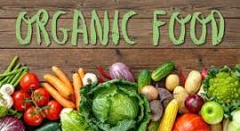

Why Choose Organic?
Health benefits
- Higher Nutrient Levels
- Better Taste
Environment benefits
- Sustainable Farming Practices
- Reduced Pollution
Ethical benefits
- Support for Local Farmers
- Fair Trade Practices
Choosing organic foods benefits your health, supports sustainable and ethical farming practices, and helps protect the environment. Make the switch today and enjoy the natural, wholesome goodness of organic produce.